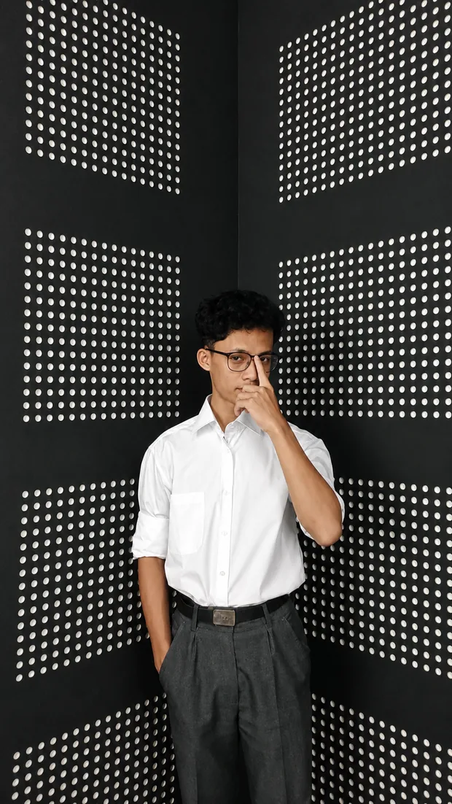

Mewujudkan
ide jadi sistem nyata.
Halo, saya Harun Ar Rasyid — insinyur sistem fisik dan perangkat lunak asal Banyumas, Jawa Tengah. Berfokus merancang arsitektur terintegrasi: dari perancangan firmware mikrokontroler (ESP32/STM32/RPi), inferensi Computer Vision berlatensi rendah (YOLOv8/OpenCV), hingga web dashboard monitoring waktu nyata.
Proyek teruji di lapangan dengan eksekusi terukur.

SYSTEMS
Karya unggulan.
Koleksi sistem nyata di mana sensor fisik, kecerdasan edge computing, dan tantangan lapangan nyata berpadu.
Dari keping silikon hingga arsitektur cloud.
Saya memandang hardware dan software bukan sebagai dua entitas terpisah, melainkan satu kesatuan arsitektur yang saling menguatkan. Berawal dari skematik elektronika dan jalur sinyal analog, berlanjut ke firmware mikrokontroler berdaya rendah, hingga mengalir menjadi analitik cloud yang intuitif bagi pengguna akhir.
Telah membuktikan keandalan rekayasa di berbagai ranah: otomasi smart home mandiri lokal dan telemetri PLTS hybrid di TW Smarthome, pemantauan analitik lalu lintas CCTV dan okupansi gedung di Dinkominfo Kab. Banyumas, inovasi kotak paket COD surya berlisensi HKI (COBOX), hingga riset deteksi benih ikan dan akuisisi FFT audio di Telkom University Purwokerto.
Pelajari Rekam Jejak Saya ↗Indeks studi kasus.
Arsip lengkap 25 dokumentasi rekayasa dari proyek NH IoT, TW Smarthome, penelitian Telkom University, dan magang Dinkominfo.
Repositori GitHub publik.
Katalog filterable seluruh repositori publik dari @rasiharunart1 melalui GitHub REST API, dengan cadangan offline 43 repositori terverifikasi.
Memuat repositori GitHub @rasiharunart1...
Jika batasan rate limit GitHub API tercapai, Anda dapat mengunduh berkas langsung dari endpoint JSON resmi GitHub ↗ lalu menggunakan tombol Impor di atas.
Belajar lewat membangun.
Pengalaman langsung di industri smart home, tim riset universitas, dan dinas komunikasi pemerintahan telah membentuk prinsip rekayasa saya: pahami masalah nyata terlebih dahulu, bangun arsitektur yang tahan banting, dan uji langsung di lapangan.
IoT Programmer · TW Smarthome
Mengembangkan arsitektur smart home mandiri (local server-first) tanpa ketergantungan cloud pihak ketiga menggunakan MQTT broker lokal. Mengimplementasikan komunikasi nirkabel dua arah RF 433MHz berbiaya hemat serta modul telemetri monitoring real-time untuk PLTS hybrid bertenaga surya menggunakan HTTPClient.
*Berdasarkan riwayat keterlibatan industri aktifComputer Vision & Web Developer (Magang) · Dinkominfo Kab. Banyumas
Membangun sistem pemantauan lalu lintas cerdas (Vehicle Counter) berbasis OpenCV & YOLO dari kamera CCTV persimpangan jalan kota, sistem penghitung kapasitas okupansi auditorium (Person Counter), serta konfigurasi dan kustomisasi platform Moodle LMS untuk pelatihan Aparatur Sipil Negara (ASN).
IoT Programmer & Periset Sistem · Telkom University Purwokerto
Merancang sistem penghitung benih ikan otomatis berbasis Raspberry Pi 5 dan YOLO dengan GUI desktop Python. Mengembangkan perangkat telemetri ESP32 untuk monitoring audio FFT dan berkas WAV via Laravel/MQTT, sistem timbangan Solvia Machine Cocobase (Innovilage) dengan Next.js, serta otomasi dehumidifikasi pengering kopi.
S1 Teknik Informatika · Telkom University Purwokerto
Fokus keilmuan pada Sistem Tertanam (Embedded Systems), Kecerdasan Buatan (Artificial Intelligence / Computer Vision), dan Rekayasa Perangkat Lunak Terdistribusi.
Teknik Elektronika Audio Video · SMKN 2 Purwokerto
Fondasi mendalam pada perancangan sirkuit elektronika analog/digital, pengolahan sinyal audio frekuensi, instrumentasi sensorik, dan penyolderan PCB presisi.
Punya ide atau tantangan rekayasa?
Mari jadikan sistem nyata.
Terbuka untuk kolaborasi proyek embedded systems, visi komputer industri, rancang bangun IoT, maupun peluang karier engineering.